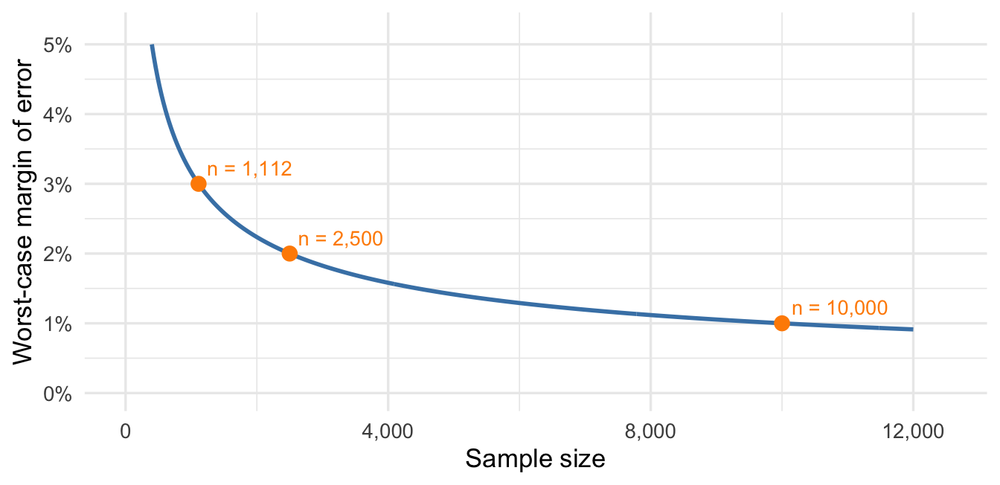
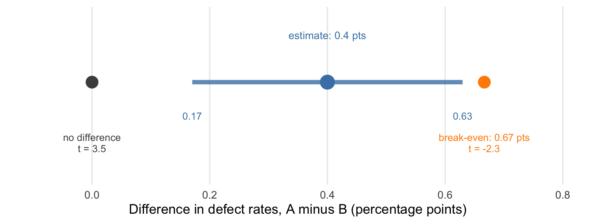

19 Proportions and Comparisons Between Groups
Earlier chapters built two tools for a population mean. The confidence interval reports the estimate plus or minus two standard errors as a range of plausible values. A hypothesis test uses the t-statistic and its p-value to assess the strength of evidence against a hypothesized value. The t-statistic counts the standard errors between the estimate and that value; the p-value is the probability of a test statistic at least as extreme as the one observed, assuming the hypothesized value is true. Smaller p-values indicate stronger evidence against it. Neither argument used anything specific to a mean beyond two facts: the estimator’s sampling distribution is approximately normal and centered at the parameter, and we can estimate its standard error.
Many business questions concern other parameters: the share of customers who will renew, the change in average handling time under a new process, the gap in defect rates between two suppliers. This chapter supplies the standard errors for a sample proportion, a difference in two means, and a difference in two proportions. With the right standard error, the interval and the test work as they did for a mean.
19.1 A sample proportion
As we saw with loan defaults, a sample proportion is the mean of a dummy, or indicator, variable that equals 1 when an outcome occurs and 0 otherwise.
Suppose a marketing team shows 1,100 customers two advertisements for the same product, one written by a person and the other by AI. Each customer sees the ads in random order, without labels identifying their authors, and independently chooses the one they think AI wrote. In this invented study, 531 customers choose correctly. Let \(X_i=1\) if customer \(i\) correctly identifies the AI-written ad and \(X_i=0\) otherwise. Adding up the \(X_i\) counts the correct answers, so the fraction of the sample who identified the AI-written ad correctly is the sample mean of the \(X_i\):
\[ \hat p = \frac{1}{n}\sum_{i=1}^n X_i = \frac{531}{1{,}100} \approx 0.483. \]
Definition 19.1: Population and sample proportion
The population proportion \(p\) is the fraction of the population with the outcome of interest. Equivalently, it is the probability that a unit drawn at random from the population has the outcome. It is a parameter: fixed and unknown.
The sample proportion \(\hat p\) is the fraction of a random sample with the outcome. It is the sample mean of the 0/1 variable that records the outcome, and it estimates \(p\). We write \(\hat p\) for both the estimator and the estimate it produces from a particular sample.
Treat the participants as a random sample of the company’s customers, with responses modeled as iid draws just as in the SAP example. Here \(p\) is the proportion of customers who would correctly identify the AI-written ad in this comparison. Each \(X_i\) is a 0/1 random variable with mean \(p\) and variance \(p(1-p)\), which we derive in the technical detail below. The rules for averages of iid random variables give the center and spread of the sampling distribution, and the Central Limit Theorem gives its shape:
\[ \hat p \;\approx\; N\!\left(p,\; \frac{p(1-p)}{n}\right). \]
In words: across random samples the sample proportion is right on average, and its typical distance from \(p\) shrinks like \(1/\sqrt n\). This is the sampling distribution of \(\bar X\) with \(\sigma^2\) replaced by \(p(1-p)\).
NoteStandard error of a sample proportion
For an iid sample of \(n\) 0/1 observations with population proportion \(p\),
\[ SE(\hat p) = \sqrt{\frac{p(1-p)}{n}} \approx \sqrt{\frac{\hat p(1-\hat p)}{n}}. \]
The standard deviation of a 0/1 variable is determined by \(p\), so there is no separate \(s\) to compute; we plug \(\hat p\) in for the unknown \(p\). The result is the typical size of the error \(\hat p-p\) across random samples.
The normal approximation needs enough of both outcomes in the sample. As in Chapter 15, there is no single cutoff. A proportion near 0 or 1 needs a larger sample than a proportion near one half, because the distribution of a rare 0/1 outcome is strongly skewed.
Technical detail 19.1: Where \(p(1-p)\) comes from, and why \(s/\sqrt n\) gives the same answer
A 0/1 random variable \(X\) with \(\Pr(X=1)=p\) has mean \(E[X]=0(1-p)+1(p)=p\). Its variance is the probability-weighted average of squared deviations from \(p\):
\[ \operatorname{Var}(X)=(0-p)^2(1-p)+(1-p)^2p = p(1-p)\left[p+(1-p)\right]=p(1-p). \]
We could ignore all of this and compute the usual standard error \(s/\sqrt n\) from the column of zeros and ones. For 0/1 data the sample variance works out to \(s^2=\frac{n}{n-1}\hat p(1-\hat p)\), so the two standard errors differ only in dividing by \(n-1\) instead of \(n\). In the advertising study, \(s/\sqrt n = 0.015073\) and \(\sqrt{\hat p(1-\hat p)/n}=0.015067\); the two agree to four decimal places.
For the advertising study,
\[ SE(\hat p) \approx \sqrt{\frac{0.483(1-0.483)}{1{,}100}} \approx 0.015, \]
or about 1.5 percentage points. The two-SE recipe for a confidence interval applies directly:
\[ 0.483 \pm 2(0.015) \approx [0.453,\ 0.513]. \]
TipInterpretation: can customers identify the AI-written ad?
The plausible values for the share of customers who would correctly identify the AI-written ad run from about 45.3% to about 51.3%. A share of 50% is one of them, and so is 46%. Guessing between the two ads would produce a correct answer half the time, so the data are consistent with chance performance. Under the sampling assumptions, we estimate the share of correct answers to within about 3 percentage points.
Exercise 19.1: An email open rate
A marketing team sends a pilot version of a promotional email to a random sample of 850 customers, and 287 of them open it. These counts are invented.
- Estimate the open rate among all customers with an approximate 95% confidence interval.
- The team considers 35% a good open rate for a campaign of this kind. What does the interval say about how this campaign compares?
Solution
- The sample proportion is \(\hat p=287/850\approx0.338\), with estimated standard error \(\sqrt{0.338(0.662)/850}\approx0.016\). The interval is \(0.338\pm2(0.016)\approx[0.305,\ 0.370]\), or about 30.5% to 37.0%.
- The estimate of 33.8% is below 35%, but 35% lies inside the interval. Open rates from 30.5% to 37.0% are plausible, so the pilot does not establish that the campaign falls short of the benchmark or that it meets it. If meeting 35% were critical, the team should have chosen the pilot’s size with the margin of error in mind, as in Section 19.1.2.
19.1.1 Testing a hypothesized proportion
The interval contains 50%, the accuracy expected under blind guessing. The hypothesis test from Chapter 17 measures the evidence against that one value. Before collecting the data, the team chose to test for a departure from 50% in either direction. With \(p_0\) denoting the hypothesized proportion, the hypotheses are \(H_0:p=0.5\) and \(H_A:p\ne0.5\), and the \(t\)-statistic has the same form as before:
\[ T=\frac{\hat p-p_0}{SE(\hat p)}, \qquad t=\frac{0.4827-0.5}{0.0151}\approx-1.15. \]
The sample proportion is about 1.15 standard errors below one half. If the null hypothesis is true, \(T\) is approximately standard normal, and the two-sided p-value is about 0.25. If customers identified the AI-written ad correctly half the time, about a quarter of studies this size would produce a sample proportion at least this far from 50% in either direction. At \(\alpha=0.05\) we fail to reject the null hypothesis, which agrees with 50% falling inside the two-SE interval. Failing to reject does not establish that customers can do no better than guessing: values from about 45.3% to 51.3% all remain plausible.
Technical detail 19.2: A standard error computed under the null
Many textbooks and software routines compute the standard error for a test of \(H_0:p=p_0\) from the hypothesized value, as \(\sqrt{p_0(1-p_0)/n}\), since the test assumes \(p=p_0\) anyway. Here that gives \(\sqrt{0.5(0.5)/1{,}100}\approx0.01508\) against the plug-in value of 0.01507, and \(t=-1.15\) either way. The two versions agree closely unless the sample is small or \(\hat p\) is far from \(p_0\). We use the plug-in standard error throughout because the same number then serves the interval and the test. Under the same two-SE rule, the interval excludes a hypothesized value exactly when the corresponding statistic exceeds 2 in absolute value, or at about the 5% level under a normal approximation.
19.1.2 Margin of error and sample size
The “margin of error” for a sample proportion is usually two standard errors, often computed in the worst case. The standard error depends on \(p\) through \(p(1-p)\), which is largest at \(p=0.5\), where it equals \(0.25\). At \(p=0.5\),
\[ SE(\hat p)=\sqrt{\frac{0.5(1-0.5)}{n}}=\frac{0.5}{\sqrt n}, \qquad\text{so}\qquad 2\,SE(\hat p)=\frac{1}{\sqrt n}. \]
In words: whatever the true proportion, a random sample of \(n\) customers has a two-SE margin no larger than \(1/\sqrt n\). For the advertising study’s 1,100 customers, \(1/\sqrt{1{,}100}\approx0.030\), or 3 percentage points.
We can compute the worst-case margin before collecting any data, which makes it useful for planning. To get a margin of error \(m\), solve \(m=1/\sqrt n\) for \(n\):
\[ n = \frac{1}{m^2}. \]
A guaranteed margin of at most 3 points requires rounding upward to \(n=1,112\) customers. Figure 19.1 plots the worst-case margin against the sample size and marks the samples needed for margins of 3, 2, and 1 points.
Moving from a 3-point margin to a 2-point margin takes about 1,400 additional customers. Moving from 2 points to 1 takes another 7,500. Because the margin shrinks like \(1/\sqrt n\), halving it always requires four times the sample.
NotePlanning a sample size for a proportion
For a random sample of size \(n\), the two-SE margin of error for a proportion is at most \(1/\sqrt n\), so a sample of
\[ n \approx \frac{1}{m^2} \]
guarantees a margin no larger than \(m\) under the sampling assumptions. The guarantee is conservative when \(p\) is far from one half. At \(p=0.1\) the margin is \(2\sqrt{0.1(0.9)/n}=0.6/\sqrt n\), which is 60% of the worst case. If earlier data put \(p\) in a narrow range, plan with \(2\sqrt{p(1-p)/n}\) at the end of that range closest to one half.
Exercise 19.2: A remote-work survey
A technology company with 5,000 employees is considering a permanent remote-work policy. In an invented survey, HR asks a random sample of 200 employees whether they would support the policy, and 142 say yes. Management will adopt the policy only if more than 60% of all employees support it. Treat the responses as iid and assume the normal approximation is adequate.
- Compute an approximate 95% confidence interval for the proportion of all employees who support the policy.
- Should management proceed? Confirm your answer by computing the \(t\)-statistic for the null hypothesis \(p=0.60\).
Solution
- The sample proportion is \(\hat p=142/200=0.71\), with estimated standard error \(\sqrt{0.71(0.29)/200}\approx0.032\). The interval is \(0.71\pm2(0.032)\approx[0.646,\ 0.774]\).
- Every plausible value is above 60%; the lowest is about 64.6%. The \(t\)-statistic is \((0.71-0.60)/0.032\approx3.4\), so the sample proportion sits 3.4 standard errors above the threshold, and we reject \(p=0.60\) at the 5% level. Under the sampling assumptions, the survey supports proceeding.
19.2 A difference in means
We are often interested in the difference between two groups’ means more than in either mean alone. Suppose a company pilots an AI chatbot for customer support, and the average satisfaction score for the chatbot’s conversations comes in below the average for human agents. Before concluding that the chatbot underperforms, the company should ask how much of the gap sampling variation could explain.
Call the groups \(A\) and \(B\), with population means \(\mu_A\) and \(\mu_B\). The parameter is the difference \(\mu_A-\mu_B\). We observe independent random samples of sizes \(n_A\) and \(n_B\), and estimate the parameter with the difference in sample means, \(\bar X_A-\bar X_B\).
Each sample mean is right on average, so their difference is too: \(E[\bar X_A-\bar X_B]=\mu_A-\mu_B\). For the spread, we use the variance rule for a difference. Because the samples are independent the covariance term is zero, and the variances add:
\[ \operatorname{Var}(\bar X_A-\bar X_B)=\operatorname{Var}(\bar X_A)+\operatorname{Var}(\bar X_B)=\frac{\sigma_A^2}{n_A}+\frac{\sigma_B^2}{n_B}. \]
The variances add even though we subtract the means, because an error in either sample mean moves the difference. A difference of two independent, approximately normal estimators is itself approximately normal, so the two-SE interval and the \(t\)-statistic apply once we have the standard error.
NoteStandard error of a difference in means
For independent iid samples from groups \(A\) and \(B\),
\[ SE(\bar X_A-\bar X_B)=\sqrt{\frac{\sigma_A^2}{n_A}+\frac{\sigma_B^2}{n_B}} \approx\sqrt{\frac{s_A^2}{n_A}+\frac{s_B^2}{n_B}}, \]
where \(s_A\) and \(s_B\) are the two sample standard deviations. Equivalently, it is \(\sqrt{SE(\bar X_A)^2+SE(\bar X_B)^2}\): square each group’s standard error, add, and take the square root. The result is the typical size of the error in the estimated difference across repeated pairs of samples. It is larger than either group’s standard error and smaller than their sum.
The formula requires independent samples, meaning that the units drawn for one group tell us nothing about the units drawn for the other. It does not apply to paired data, where each observation in one group is matched to an observation in the other, such as the same stores before and after a price change. For pairs, compute the difference within each pair and apply the one-sample tools to those differences, as in the paired assay exercise below.
Consider a tech company comparing two coding bootcamps for training new hires. In this invented study, the company independently draws random samples of employees who completed each program, intensive and standard, and gives everyone the same standardized coding exercise. Each employee appears in only one sample, and choosing employees from one program does not affect which employees are chosen from the other, so we model the samples as independent. Table 19.1 summarizes the scores.
| Program | Employees | Mean score | SD | SE of mean |
|---|---|---|---|---|
| Intensive | 70 | 129 | 20 | 2.39 |
| Standard | 50 | 120 | 25 | 3.54 |
The intensive group scored 9 points higher on average. Our best guess for the difference in mean scores between all employees who might take the intensive program and all who might take the standard one is 9 points, but a gap of that size could reflect the particular 120 employees in the study. The standard error of the difference is
\[ SE(\bar X_A-\bar X_B)\approx\sqrt{\frac{20^2}{70}+\frac{25^2}{50}}\approx4.27\text{ points}, \]
and the approximate 95% confidence interval is
\[ 9\pm2(4.27)\approx[0.5,\ 17.5]\text{ points}. \]
TipInterpretation: direction and size
Every plausible value for the difference is positive, so under the sampling assumptions the data support a higher mean score for the intensive program. The size of the advantage is much less certain: anything from about half a point to about 18 points is plausible. If the intensive program costs more in money and employee time, those endpoints could lead to different decisions.
The test of “no difference” reaches the same conclusion about direction. The hypotheses are \(H_0:\mu_A-\mu_B=0\) and \(H_A:\mu_A-\mu_B\ne0\), and the \(t\)-statistic is
\[ t=\frac{(\bar x_A-\bar x_B)-0}{SE(\bar X_A-\bar X_B)}=\frac{9}{4.27}\approx2.11, \]
with a two-sided p-value of about 0.035. If the two programs had identical mean scores, about 3.5% of studies like this one would produce a difference at least this many standard errors from zero. At \(\alpha=0.05\) we reject the null hypothesis, which agrees with the interval excluding zero.
WarningCommon mistake: Judging a difference by whether two intervals overlap
The two-SE intervals for the separate means are \([124.2,\ 133.8]\) for the intensive program and \([112.9,\ 127.1]\) for the standard program. They overlap, yet the interval for the difference excludes zero.
Two intervals fail to overlap only when the gap between the means exceeds the sum of the two margins, \(2(2.39)+2(3.54)\approx11.9\) points. The interval for the difference excludes zero when the gap exceeds \(2\sqrt{2.39^2+3.54^2}\approx8.5\) points, which is a lower bar because the square root of a sum of squares is smaller than the sum. The 9-point gap clears the second threshold and not the first. A question about a difference needs the interval for the difference.
To attribute the difference in scores to the program, we need the standard-program group to represent how the intensive-program employees would have performed had they taken the standard program, and vice versa. If both groups had taken the same program, we would expect similar scores apart from chance variation.
NoteThe direction of selection bias
If stronger or more motivated employees chose the intensive program, we would expect bias in its favor: the difference between the groups would include any effect of the program along with the effects of greater skill and motivation. If managers instead steered weaker employees toward the intensive program, we would expect bias against it for the same reason. Those employees might score lower even if the program helped them, because they started with weaker skills. As with the SAP customers, the confidence interval accounts for sampling variability, but does not remove selection bias.
Random assignment makes these comparisons credible because employees’ abilities, motivation, and other characteristics do not determine which program they receive. The groups can still differ by chance, but assignment does not systematically put stronger employees into one program. This lets us assess whether the observed score difference is evidence of a program effect.
Exercise 19.3: A first comparison of means
In an invented study, a company takes independent random samples of 100 tickets from each of two service teams. Team A’s tickets have mean resolution time 18 hours and standard deviation 10 hours; Team B’s have mean 15 hours and standard deviation 10 hours. Assume the normal approximation is adequate for each sample mean.
- Estimate \(\mu_A-\mu_B\) and its standard error, then compute the two-SE interval.
- What does the sign of the interval say? Is a population difference of four hours plausible?
- What happens to the estimate, the standard error, and the interval if you report B minus A instead?
Solution
- The estimate is \(18-15=3\) hours. Each sample mean has standard error \(10/\sqrt{100}=1\) hour, so the difference has standard error \(\sqrt{1^2+1^2}\approx1.41\) hours. The interval is \(3\pm2(1.41)\approx[0.17,\ 5.83]\) hours.
- The whole interval lies above zero, so under the sampling model Team A’s tickets take longer on average. The size of the gap is uncertain: differences from about 0.2 to 5.8 hours are plausible, including four hours.
- The estimate becomes \(-3\) hours and the interval becomes \([-5.83,\ -0.17]\) hours. The standard error stays 1.41 hours, because it measures the spread of the estimate, which does not depend on the order of subtraction.
Exercise 19.4: Cloud and on-premise response times
A company compares application response times between cloud and on-premise deployments of its software. In an invented benchmark, 28 cloud instances average 92.4 milliseconds with a standard deviation of 15.6, and 35 on-premise instances average 89.7 milliseconds with a standard deviation of 18.2. Treat the two sets of instances as independent random samples, and assume the normal approximation is adequate for each sample mean.
- Compute an approximate 95% confidence interval for the difference in mean response time, cloud minus on-premise.
- Can the company conclude that the deployments differ in mean response time? Can it conclude that they perform the same?
Solution
- The standard errors are \(15.6/\sqrt{28}\approx2.95\) and \(18.2/\sqrt{35}\approx3.08\) milliseconds. The difference is \(92.4-89.7=2.7\) milliseconds, with standard error \(\sqrt{2.95^2+3.08^2}\approx4.26\). The interval is \(2.7\pm2(4.26)\approx[-5.8,\ 11.2]\) milliseconds.
- Zero is a plausible value, and \(t=2.7/4.26\approx0.63\), so we fail to reject the null hypothesis of equal means. That does not establish equal performance. The data are consistent with the cloud deployment being 11 milliseconds slower on average and with it being nearly 6 milliseconds faster. Whether a gap of that size matters depends on the application; if it does, the company needs more instances in the benchmark.
Exercise 19.5: Did the training shorten response times?
A company introduces a training program meant to reduce response times to support tickets. Its customer research suggests that customers do not notice an improvement smaller than 30 minutes. In an invented evaluation, a random sample of 42 tickets from before the training averaged 245 minutes with a standard deviation of 65, and a random sample of 38 tickets from after the training averaged 210 minutes with a standard deviation of 58.
- Compute an approximate 95% confidence interval for the reduction in mean response time, before minus after. Is a reduction of zero plausible?
- Should the company expect customers to notice the improvement? Compute the \(t\)-statistic for the null hypothesis that the reduction is 30 minutes.
- The two samples come from different months. What would you want to know before attributing the reduction to the training?
Solution
- The standard errors are \(65/\sqrt{42}\approx10.03\) and \(58/\sqrt{38}\approx9.41\) minutes, so the standard error of the difference is \(\sqrt{10.03^2+9.41^2}\approx13.75\) minutes. The interval is \(35\pm2(13.75)=[7.5,\ 62.5]\) minutes. Zero lies outside it, and \(t=35/13.75\approx2.5\): under the sampling assumptions, mean response time fell.
- The estimate of 35 minutes is above the 30-minute threshold, but the threshold is well inside the interval, with \(t=(35-30)/13.75\approx0.36\). Reductions from 7.5 minutes, below the 30-minute threshold, to 62.5 minutes, well above it, are all plausible. The data establish an improvement without establishing a noticeable one.
- A before-and-after comparison attributes every change between the two periods to the training. Ticket volume, the mix of easy and hard tickets, staffing, and seasonality could each have shifted response times. Staggering the training across randomly chosen teams, and comparing trained with untrained teams over the same weeks, would separate the training from the calendar.
Exercise 19.6: Same tablets, two measurements
A drug manufacturer is evaluating a faster handheld assay. A quality lab randomly samples 36 tablets from a large production run and measures each tablet with both the handheld device and the standard lab assay. Define each tablet’s difference as the handheld reading minus the lab reading. In an invented dataset the differences have mean 1.5 mg and sample standard deviation 3 mg. Model the tablet differences as iid and assume the normal approximation for their mean is adequate.
- Compute a two-SE interval for the population mean difference.
- Explain why \(n=36\), not 72. Why would combining the separate standard deviations of the handheld and lab readings discard relevant information?
- The company will accept the device if its average difference from the lab assay is less than 3 mg in either direction. What does the interval say about that standard? Does it tell you how far a single handheld reading can fall from the lab value?
Solution
- The estimated standard error is \(3/\sqrt{36}=0.5\) mg, so the interval is \(1.5\pm2(0.5)=[0.5,\ 2.5]\) mg. Under the model, the handheld device reads higher than the lab assay on average.
- There are 36 differences, one per independent tablet. Both readings on a tablet share that tablet’s actual content, so they are positively correlated, and tablet-to-tablet variation in content cancels in the difference. The standard deviation of the differences already reflects that covariance. The formula for independent samples would ignore it and overstate the standard error.
- Every plausible mean difference lies between 0.5 and 2.5 mg, inside the 3 mg standard, so the data support accepting the device on average. The interval concerns the mean difference only. Individual differences have a sample standard deviation of 3 mg, so single readings can miss the lab value by more than 3 mg.
19.3 A difference in proportions
Proportions are means of 0/1 variables, so the argument for a difference in means carries over with \(SE(\hat p)\) in place of \(s/\sqrt n\). The parameter is \(p_A-p_B\), the estimator is \(\hat p_A-\hat p_B\), and independence again makes the variances add.
NoteStandard error of a difference in proportions
For independent iid samples of 0/1 observations from groups \(A\) and \(B\),
\[ SE(\hat p_A-\hat p_B)\approx\sqrt{\frac{\hat p_A(1-\hat p_A)}{n_A}+\frac{\hat p_B(1-\hat p_B)}{n_B}} =\sqrt{SE(\hat p_A)^2+SE(\hat p_B)^2}. \]
The normal approximation needs enough of both outcomes in each group. The estimated difference and its standard error are in percentage points when the proportions are written as percentages.
A manufacturer must choose between two suppliers of a critical component. Defective parts cause production delays, so the company runs a six-month evaluation, inspecting 15,000 parts from each supplier. In this invented study, 180 of the parts from Supplier A, the current and cheaper supplier, are defective, against 120 from Supplier B. The corresponding rates are 1.2% and 0.8%. The difference in defect rates is 0.4 percentage points, with
\[ SE(\hat p_A-\hat p_B)\approx\sqrt{\frac{0.012(0.988)}{15{,}000}+\frac{0.008(0.992)}{15{,}000}}\approx0.00115, \]
or about 0.11 percentage points. The approximate 95% confidence interval is
\[ 0.4\pm2(0.11)\approx[0.17,\ 0.63]\text{ percentage points}, \]
and the \(t\)-statistic against a difference of zero is 3.5. Under the sampling assumptions, Supplier A’s parts are worse.
The normal approximation treats the inspected parts from each supplier as independent draws from that supplier’s production. It does not make either supplier’s future production a random sample of every setting in which the company might use these components.
19.3.1 When a detectable difference is too small to matter
Whether that should change the company’s supplier depends on costs. Supplier A charges $12 per part and Supplier B charges $15, and the company uses 50,000 parts a year, so switching to B costs an additional $150,000 a year. Each defective part costs about $450 in downtime and replacement. At the estimated difference of 0.4 points, staying with A means \(50{,}000(0.004)=200\) additional defective parts a year, costing $90,000. That is $60,000 less than B’s price premium.
The estimate alone doesn’t settle it, because the true difference could be larger than 0.4 points. Switching pays only if the extra defects cost more than the premium, which requires a difference in defect rates above the break-even value
\[ \frac{\$150{,}000}{\$450\times50{,}000}\approx0.0067, \]
or 0.67 percentage points. Figure 19.2 places the interval beside the two differences that matter for the decision: zero and the break-even value.

We reject a difference of zero, and we also reject the break-even difference, with \(t=-2.3\). Even at the interval’s upper endpoint the additional defects would cost $141,700 a year, less than the $150,000 premium. The company saves money by staying with the supplier whose parts are measurably worse.
WarningCommon mistake: Reading statistical significance as practical importance
Statistical significance measures evidence against a hypothesized value, usually zero difference. It does not tell us whether the difference is large enough to matter. With a sufficiently large sample, even a very small difference can be statistically significant.
A training program that raises scores by a fraction of a point might not justify three days away from work. A checkout redesign that adds one purchase per 10,000 visits could pay for itself at a site with millions of visitors. Practical importance depends on the costs, benefits, and scale of the decision. Compare the confidence interval with the differences that would change what you do.
Technical detail 19.3: A pooled standard error for testing equal proportions
Under the null hypothesis \(p_A=p_B\), the two groups share one proportion, and many textbooks and software routines estimate it by pooling the groups: \(\bar p=(\text{total with the outcome})/(n_A+n_B)\). The standard error computed under the null is then
\[ \sqrt{\bar p(1-\bar p)\left(\frac{1}{n_A}+\frac{1}{n_B}\right)}. \]
For the supplier evaluation, \(\bar p=0.0100\) and the pooled standard error is 0.001149, against 0.001149 unpooled. The corresponding \(t\)-statistics are 3.48 and 3.48; both round to 3.48. The pooled version applies only to the test of zero difference. The interval, and a test of any nonzero value such as a break-even difference, use the unpooled standard error in the rule above.
Exercise 19.7: An A/B test
An e-commerce site randomly assigns visitors to one of two page designs. In this invented test, Variant A converts 156 of 820 visitors and Variant B converts 171 of 830.
- Compute an approximate 95% confidence interval for the difference in conversion rates, B minus A.
- Should the company switch to Variant B based on these results?
Solution
- The sample proportions are \(156/820\approx0.190\) and \(171/830\approx0.206\), with standard errors 0.0137 and 0.0140. The difference is 1.6 percentage points, with standard error \(\sqrt{0.0137^2+0.0140^2}\approx0.0196\). The interval is \(0.016\pm2(0.0196)\approx[-0.023,\ 0.055]\), or \(-2.3\) to \(5.5\) percentage points.
- The interval includes zero, and \(t=0.016/0.0196\approx0.8\), so the test does not detect a difference. The plausible values run from Variant A converting 2.3 points better to Variant B converting 5.5 points better, and at conversion rates near 20% either would be a large effect. The test does not settle the decision. The company would need the value of an added conversion and the costs of switching before choosing between the designs.
Exercise 19.8: Checkout completion by payment method
An e-commerce company compares checkout completion across payment methods. In an invented month of data, 900 checkout attempts used a credit card and 847 of them were completed; 480 attempts used a digital wallet and 445 were completed. Customers chose their own payment method. Treat the attempts as independent and assume the normal approximation is adequate for each completion rate.
- Compute an approximate 95% confidence interval for the difference in completion rates, digital wallet minus credit card.
- A manager proposes promoting digital wallets, or discouraging them, based on these rates. What does the interval say?
- Suppose the interval had excluded zero. Would a difference in completion rates show that steering customers toward the better-performing method would raise completion?
Solution
- The completion rates are \(847/900\approx0.941\) and \(445/480\approx0.927\), with standard errors 0.0078 and 0.0119. The difference is \(-1.4\) percentage points, with standard error \(\sqrt{0.0078^2+0.0119^2}\approx0.0142\). The interval is \(-0.014\pm2(0.0142)\approx[-0.042,\ 0.014]\), or \(-4.2\) to \(1.4\) percentage points.
- Zero is a plausible value, so the data do not establish a difference in either direction, so the comparison gives no basis for promoting or discouraging either method. Both complete more than 92% of attempts.
- No. Customers who choose digital wallets may differ from credit-card customers in device, order size, or urgency, and those differences could produce a gap in completion rates that has nothing to do with the payment method. The interval accounts for sampling variability in the two rates, not for who selects into each group. Randomly varying which method the checkout page features would address the manager’s question.
19.4 Summary
Table 19.2 collects the four standard errors we have used so far. In each row the approximate 95% confidence interval is the estimate plus or minus two standard errors, and the \(t\)-statistic for a hypothesized value is the estimate minus that value, divided by the standard error.
| Parameter | Estimate | Estimated standard error |
|---|---|---|
| Mean \(\mu\) | \(\bar x\) | \(s/\sqrt n\) |
| Proportion \(p\) | \(\hat p\) | \(\sqrt{\hat p(1-\hat p)/n}\) |
| Difference in means \(\mu_A-\mu_B\) | \(\bar x_A-\bar x_B\) | \(\sqrt{s_A^2/n_A+s_B^2/n_B}\) |
| Difference in proportions \(p_A-p_B\) | \(\hat p_A-\hat p_B\) | \(\sqrt{\hat p_A(1-\hat p_A)/n_A+\hat p_B(1-\hat p_B)/n_B}\) |
- The interval and the test are the same for every row of the table. The easiest place to make a mistake is in choosing the standard error.
- The standard errors for differences assume independent samples. For paired data, take the difference within each pair first and use the one-sample formula on those differences.
- A test addresses one hypothesized value, and the interval shows every value the data leave plausible. A decision with a threshold or a break-even needs the interval, because a difference can be detectably different from zero and still too small to act on, or undetected and still possibly large.
- These intervals measure sampling variability only. Whether two groups are otherwise comparable depends on how they were formed: random assignment supports reading a difference as the effect of the treatment, and self-selected groups do not.
19.5 Additional practice
Exercise 19.9: Choose the parameter and standard error
For each setting, name the population parameter, identify the unit of observation, and give the estimated standard error. State the independence assumption the standard error needs.
- Estimate mean resolution time from 100 randomly selected tickets.
- Estimate the renewal proportion from 400 randomly selected customers.
- Compare mean resolution time between two independent samples of tickets handled by different teams.
- Compare purchase proportions among visitors randomly assigned to two webpage designs.
- Estimate the mean difference between a handheld assay and the standard lab assay when a lab measures the same 36 tablets with both; the standard deviation of the 36 differences is available.
Solution
- The parameter is a population mean \(\mu\) and the unit is a ticket. The standard error is \(s/\sqrt n\), which assumes independent tickets.
- The parameter is a proportion \(p\) and the unit is a customer. The standard error is \(\sqrt{\hat p(1-\hat p)/n}\), which assumes independent customers.
- The parameter is a difference in means \(\mu_A-\mu_B\) and the unit is a ticket. The standard error is \(\sqrt{s_A^2/n_A+s_B^2/n_B}\), which assumes independent tickets within each team and independent samples from the two teams.
- The parameter is a difference in proportions \(p_A-p_B\) and the unit is a visitor. The standard error is \(\sqrt{\hat p_A(1-\hat p_A)/n_A+\hat p_B(1-\hat p_B)/n_B}\), which assumes independent visitors and independent groups; random assignment of separate visitors supplies the second.
- The parameter is the mean within-tablet difference and the unit is a tablet. Compute each tablet’s difference first; the standard error is \(s_d/\sqrt{36}\), which assumes independent tablets. The two readings on one tablet are paired, so the formula for independent samples does not apply.
Exercise 19.10: How many adults rent?
The Federal Reserve’s 2025 Survey of Household Economics and Decisionmaking (SHED), whose economic-conditions ratings we plotted in the chapter on categorical variables, also asks each respondent about housing. Of the 12,934 respondents in our extract, 3,426 said they pay rent. The others own their home, with or without a mortgage, or neither own nor pay rent. Let \(p\) denote the proportion of all U.S. adults who pay rent. For this exercise, treat the respondents as a random sample of U.S. adults. The SHED publishes survey weights, but this extract does not include them; the interval below therefore omits weighting and nonresponse error.
A renters-insurance company, invented for this exercise, sizes its market with a planning model that assumes one in four adults pays rent, so \(p_0=0.25\).
- Compute \(\hat p\), its estimated standard error, and a two-SE interval for \(p\). State in one sentence what the interval says about the share of adults who rent.
- Is the planning model’s 25% a plausible value for \(p\)? Confirm your answer with a t-statistic, use the 68/95/99.7 rule to bound the two-sided p-value, and state the verdict at \(\alpha=0.05\).
- What sources of error does this unweighted interval leave out? Explain why a narrow sampling interval alone does not establish that the estimate is close to the proportion among all U.S. adults.
Solution
- The sample proportion is \(\hat p=3,426/12,934\approx0.265\), with estimated standard error \(\sqrt{0.265(0.735)/12,934}\approx0.0039\), or about 0.388 percentage points. The two-SE interval is \(0.265\pm2(0.0039)\), about \([25.7\%,\ 27.3\%]\). Under the sampling assumption, the plausible values for the share of U.S. adults who pay rent sit a little above one in four, with a margin of error of 0.8 points.
- The interval lies entirely above 25%, so the planning value is not plausible under the sampling assumption. To test \(H_0:p=0.25\) against \(H_A:p\ne0.25\), work in percentage points: \[ t=\frac{26.49-25}{0.388}\approx3.84. \] The sample proportion sits almost four standard errors above the planning value. About 99.7% of a standard normal distribution lies within three standard deviations of zero, so the two-sided p-value is below 0.003, well below 0.05, and we reject the null hypothesis. The verdict agrees with the planning value falling outside the two-SE interval.
- The interval measures the variation we would see from one random sample to the next under the sampling model. It does not cover differences between people who answer the survey and people who do not, or the population adjustments that the omitted weights would make. A narrow interval can coexist with a systematic difference between these respondents and all U.S. adults.
Exercise 19.11: Zero observed errors
A random pilot audit finds no errors among 40 insurance claims. An analyst substitutes \(\hat p=0\) into \(\sqrt{\hat p(1-\hat p)/40}\), gets a standard error of zero, and reports the confidence interval \([0,\ 0]\). Has the pilot established that the population error rate is zero? What condition for the interval fails here? You do not need to construct a replacement interval.
Solution
No. A sample of 40 claims with no errors is quite likely when the population error rate is small but positive; at an error rate of 2%, for example, about 45% of samples of 40 would contain no errors, since \(0.98^{40}\approx0.45\). The normal approximation needs enough of both outcomes in the sample, and here there are no errors at all. The standard error of zero reflects that failure, not certainty about the error rate.
Exercise 19.12: Precision and audit cost
An insurer has several million claims and wants an approximate 95% confidence interval for the proportion with billing errors. Each audited claim costs $10. Use the worst-case planning margin \(1/\sqrt n\).
- Find the sample size and audit cost for a margin of 4 percentage points, and for a margin of 2 percentage points.
- Explain why halving the margin more than doubles the cost.
- The audit team proposes sampling only claims whose records are easy to retrieve. Does the calculation in part 1 account for that choice?
Solution
- Solving \(1/\sqrt n=0.04\) gives \(n=625\) claims, which cost $6,250. Solving \(1/\sqrt n=0.02\) gives \(n=2{,}500\) claims, which cost $25,000.
- The margin shrinks with \(\sqrt n\), so halving it requires four times as many claims. Cost is proportional to the number of claims, so it also quadruples.
- No. The margin describes sampling variability for a random sample of all claims. Easily retrieved claims may differ systematically in their error rate, and auditing more of them would not remove that difference.
Exercise 19.13: Two stores, two intervals
A retailer audits average transaction size at two stores. At Store A, a random sample of 64 transactions has mean $52 and standard deviation $16. At Store B, a random sample of 100 transactions has mean $58 and standard deviation $20. Assume the normal approximation is adequate for each sample mean.
- Compute the two-SE interval for each store’s mean transaction size.
- The two intervals overlap. The regional manager concludes that “the stores could easily have the same average, so there is no evidence of a difference.” Before computing anything more, say whether overlapping intervals justify that conclusion.
- Treating the samples as independent, compute the standard error of the difference in means, B minus A, and a two-SE interval for the population difference.
- In one or two sentences, reconcile parts 1 and 3.
Solution
- Store A’s standard error is \(16/\sqrt{64}=2\), giving \([48,\ 56]\). Store B’s is \(20/\sqrt{100}=2\), giving \([54,\ 62]\).
- No. Each interval describes plausible values for one mean on its own. Whether the two means could be equal is a question about their difference, which has its own standard error and its own interval.
- The standard error is \(\sqrt{2^2+2^2}\approx2.83\), and the interval is \(6\pm2(2.83)\), about \([0.3,\ 11.7]\) dollars.
- The separate intervals overlap unless the gap exceeds the sum of their margins, \(4+4=8\) dollars. The interval for the difference excludes zero once the gap exceeds two standard errors of the difference, \(2\sqrt{2^2+2^2}\approx5.7\) dollars, because standard errors combine through their squares. The $6 gap clears the second threshold but not the first.
Exercise 19.14: A sales tool with a break-even
An auto-parts distributor is considering a subscription sales-planning tool for its outside sales representatives. Counting the license and the selling time lost to training, the tool costs $4,000 per rep per quarter, so it pays for itself only if it raises mean quarterly gross margin per rep by more than $4,000. For one quarter, the distributor randomly assigned 60 of 135 participating reps to use the tool (group A); the other 75 worked as usual (group B). The numbers in this exercise are invented.
| Group | Reps | Mean gross margin | SD |
|---|---|---|---|
| A, with the tool | 60 | $96,800 | $19,500 |
| B, without the tool | 75 | $88,400 | $18,000 |
Treat the two groups as independent samples and assume the normal approximation is adequate for each group’s mean.
- Compute the estimate \(\bar x_A-\bar x_B\), its standard error, and the two-SE interval for \(\mu_A-\mu_B\), the tool’s effect on mean quarterly gross margin per rep.
- The vendor’s summary of the pilot reads, “The tool produced a statistically significant lift in gross margin.” Use the interval to evaluate that sentence at the 5% level. What does random assignment contribute to reading the difference as the tool’s effect?
- Does the pilot establish that the tool pays for itself? Compare the interval with the $4,000 break-even and state what the distributor can conclude.
Solution
- Working in thousands of dollars, the estimate is \(96.8-88.4=8.4\). The distributor measured the two groups separately, so the variances of the two sample means add: \[ SE(\bar X_A-\bar X_B)=\sqrt{\frac{19.5^2}{60}+\frac{18.0^2}{75}}\approx3.26. \] The interval is \(8.4\pm2(3.26)\approx[1.9,\ 14.9]\), or about $1,900 to $14,900 per rep per quarter.
- Zero lies below the interval’s lower endpoint, so a two-sided test of no effect rejects at about the 5% level, and the vendor’s sentence is accurate. Because the distributor randomly assigned the tool, the two groups differ only by chance apart from the tool, so the lift is credibly the tool’s effect for these reps. It is not merely a difference between the kinds of reps who would volunteer for it. Random assignment does not make these 135 reps representative of sales reps at other firms.
- No. The break-even value of $4,000 lies inside the interval, so effects both below and above break-even are consistent with the pilot. The estimate of $8,400 is above break-even, but only by \((8.4-4.0)/3.26\approx1.35\) standard errors, not enough to rule out a tool that loses money. The pilot does not establish that the tool pays. The vendor’s sentence answers whether the effect is zero; the decision turns on whether it exceeds $4,000.
Exercise 19.15: Mortgage denial rates
The HMDA data in the AER package come from a Federal Reserve Bank of Boston study of 2,380 mortgage applications in the Boston area in 1990. Each application was either denied or approved, and the data record whether the applicant was Black. Table 19.3 gives the counts. Treat the applications as a random sample of mortgage applications in the area that year.
| Group | Applications | Denied | Denial rate |
|---|---|---|---|
| Black applicants | 339 | 96 | 28.3% |
| Other applicants | 2,041 | 189 | 9.3% |
- Compute the estimated standard error and a two-SE interval for the denial rate among all applications in the area, and then separately for Black applicants and for other applicants.
- The interval for Black applicants is about four times as wide as the interval for other applicants. Give the two reasons.
- The difference between the two sample denial rates is 19.1 percentage points. Treating the two groups as independent samples, compute the standard error of the difference and a two-SE interval for the difference in denial rates.
- State carefully what the interval in part 3 does and does not establish. What questions would the Boston Fed’s researchers have needed to answer before interpreting the gap?
Solution
- Overall, \(\hat p=0.120\) with standard error \(\sqrt{0.120(0.880)/2,380}\approx0.0067\), for an interval of about \([10.6\%,\ 13.3\%]\). For Black applicants, \(\hat p=0.283\) with standard error 0.024 and interval \([23.4\%,\ 33.2\%]\). For other applicants, \(\hat p=0.093\) with standard error 0.006 and interval \([8.0\%,\ 10.5\%]\).
- The sample of Black applicants is about one sixth the size, which by itself multiplies the standard error by about \(\sqrt6\approx2.4\). Their denial rate is also closer to one half, where \(p(1-p)\) is largest, which adds the rest of the difference.
- Using the standard error for a difference in proportions, we get \(\sqrt{0.024^2+0.006^2}\approx0.025\), and the interval is about \([14.0,\ 24.1]\) percentage points.
- Under the sampling model, the interval excludes a zero gap by a wide margin, so random sampling variation alone is an implausible explanation for the observed difference. It does not say why the gap exists. Applicants differ in income, debt ratios, credit history, and the properties they sought, and the raw rates make no adjustment for any of that. The Boston Fed study’s central question was whether the gap survives after accounting for those characteristics, which requires more than a comparison of two raw rates.
Data used in this section
- Survey of Household Economics and Decisionmaking supplies the housing-status data used in the additional practice.
HMDAfrom theAERpackage supplies the Boston mortgage applications (Munnell et al. 1996; Kleiber and Zeileis 2008).